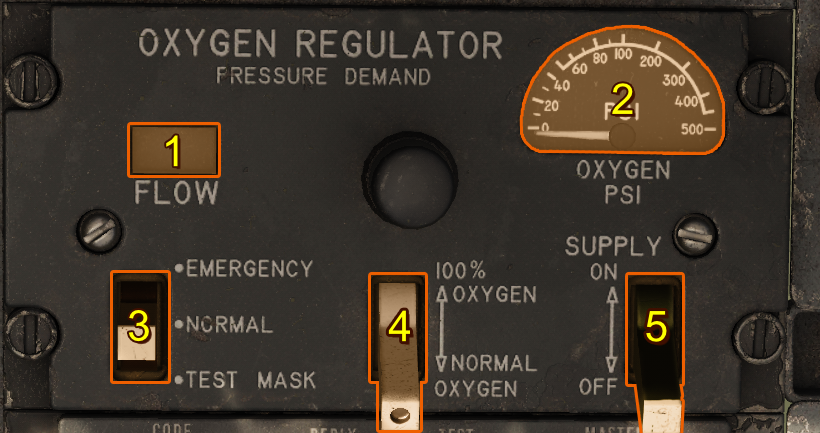

MD-1 Oxygen Regulator
Introduction
The pressure-breathing, diluter-demand oxygen regulator automatically mixes oxygen with ambient air in proportions that vary with altitude. Each time the pilot inhales, a measured quantity of this mixture is delivered. At higher altitudes, the regulator transitions to supplying oxygen at continuous positive pressure, with delivery pressure adjusting automatically to match cockpit altitude.
Controls

Flow Indicator
The flow indicator (blinker) consists of an oblong opening which shows black and white alternating during the breathing cycle.
Oxygen Supply Pressure Indicator
The oxygen supply pressure gaguge shows oxygen pressure available to the regulator.
Emergency Lever
The emergency lever should be in the center position at all times, unless and unschuduled oxygen pressure increase is desired. Moving the lever to EMERGENCY provides continuous positive pressure to the mask. When the lever is held at TEST, oxygen at positive pressure is provided to test the mask for leaks.
Diluter Lever
The diluter lever should be at NORMAL, for normal oxygen use, or at the 100% position for emergency oxygen use. With the lever at NORMAL, the regulator supplies a mixture of air and oxygen up to about 30,000 feet which is equivalent to normal breathing at sea level. Beyond 30,000 feet, 100 percent oxygen is supplied on either setting. These operating characteristics are related to the cockpit altitude only.
Supply Lever
The supply lever is used to turn the regulator ON and OFF.
Oxygen Duration
- Normal → Diluter lever set to NORMAL
- 100% → Diluter lever set to 100%
- Emerg ( ) → Diluter lever at 100%, oxygen emergency lever at EMERGENCY, and pressure suit used
- Times are in hours (larger number = longer oxygen duration)
- Liquid O₂ Quantity (L) → each column heading shows remaining liquid oxygen capacity per crew member in liters
- Emergency row → In case of depletion, descend immediately to a safe altitude not requiring supplemental oxygen
- Oxygen regulator gage pressure: constant 70 psi
| Cockpit Altitude (ft) | 5 L Liquid O₂ | 4 L Liquid O₂ | 3 L Liquid O₂ | 2 L Liquid O₂ | 1 L Liquid O₂ | Below 1 L Liquid O₂ |
|---|---|---|---|---|---|---|
| 35,000 and above | Normal 31.4 / 100% 31.4 / Emerg (12.8) | Normal 25.2 / 100% 25.2 / Emerg (10.2) | Normal 18.9 / 100% 18.9 / Emerg (7.7) | Normal 12.6 / 100% 12.6 / Emerg (5.1) | Normal 6.3 / 100% 6.3 / Emerg (2.6) | – |
| 30,000 | Normal 23.3 / 100% 22.7 / Emerg (12.8) | Normal 18.7 / 100% 18.1 / Emerg (10.2) | Normal 14.0 / 100% 13.6 / Emerg (7.7) | Normal 9.3 / 100% 9.0 / Emerg (5.1) | Normal 4.7 / 100% 4.5 / Emerg (2.6) | – |
| 25,000 | Normal 22.0 / 100% 17.5 / Emerg (9.8) | Normal 17.6 / 100% 14.0 / Emerg (7.8) | Normal 13.2 / 100% 10.5 / Emerg (5.9) | Normal 8.8 / 100% 7.0 / Emerg (3.9) | Normal 4.4 / 100% 3.5 / Emerg (2.0) | – |
| 20,000 | Normal 25.0 / 100% 13.3 / Emerg (7.6) | Normal 20.0 / 100% 10.7 / Emerg (6.1) | Normal 15.0 / 100% 8.0 / Emerg (4.6) | Normal 10.0 / 100% 5.3 / Emerg (3.0) | Normal 5.0 / 100% 2.7 / Emerg (1.5) | – |
| 15,000 | Normal 30.2 / 100% 10.7 / Emerg (6.0) | Normal 24.2 / 100% 8.6 / Emerg (4.8) | Normal 18.1 / 100% 6.4 / Emerg (3.6) | Normal 12.1 / 100% 4.3 / Emerg (2.4) | Normal 6.0 / 100% 2.2 / Emerg (1.2) | – |
| 10,000 | Normal 30.2 / 100% 8.6 / Emerg (4.8) | Normal 24.2 / 100% 6.9 / Emerg (3.8) | Normal 18.1 / 100% 5.2 / Emerg (2.9) | Normal 12.1 / 100% 3.4 / Emerg (1.9) | Normal 6.0 / 100% 1.7 / Emerg (1.0) | – |
| 5,000 | Normal 30.2 / 100% 6.8 / Emerg (3.9) | Normal 24.2 / 100% 5.4 / Emerg (3.1) | Normal 18.1 / 100% 4.1 / Emerg (2.3) | Normal 12.1 / 100% 2.7 / Emerg (1.6) | Normal 6.0 / 100% 1.4 / Emerg (0.8) | – |
| 0 | Normal 30.2 / 100% 5.5 / Emerg (3.2) | Normal 24.2 / 100% 4.4 / Emerg (2.6) | Normal 18.1 / 100% 3.3 / Emerg (1.9) | Normal 12.1 / 100% 2.2 / Emerg (1.2) | Normal 6.0 / 100% 1.1 / Emerg (0.7) | - |